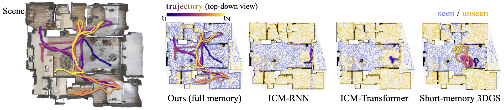
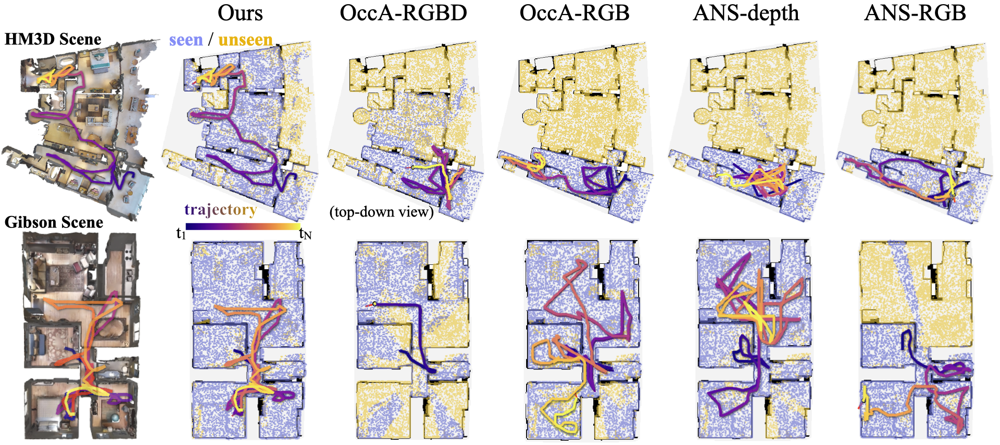
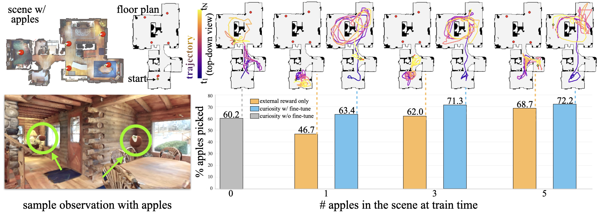

![Figure 2: Method overview. The agent (left) encodes each RGB frame into a per-frame token by fusing patch embeddings and DINOv2 features via a learnable query. Tokens are processed by causal temporal self-attention and a linear-attention module with a global hidden state, before an actor-critic head emits the next action and value estimate.
The environment (right) executes the action and returns the next observation; in parallel, a persistent 3DGS forward model renders the same view from accumulated past experience, and the discrepancy with the observed view defines the curiosity reward . The forward model is used only at training time ( blue path ); at deployment the agent acts from RGB stream alone.](figures/1199/fig_002.png)
![Figure 1: Remember to be Curious. Test-time trajectories of our curiosity-driven policy trained with episodic context and a persistent world model. Left: Our agent explores an indoor scene purely from an image stream; waypoints show the agent’s views along the path. Right: Our end-to-end design enables fine-tuning to downstream sparse-reward tasks and zero-shot generalization to AI-generated worlds. Note: the model requires no explicit mapping at test time; trajectories are overlaid on bird’s-eye-view for visualization only.](figures/1199/fig_001.png)
This paper shows that coupling a persistent 3D world model with an episodic memory agent enables scalable curiosity-driven exploration in complex 3D environments, achieving zero-shot generalization and efficient downstream task adaptation.
本文提出了一种结合持久化3D世界模型与情景记忆的深度强化学习框架，解决了好奇心驱动探索在逼真3D环境中因遗忘状态而陷入循环的难题。该方法仅通过RGB输入即可在HM3D数据集上超越基于显式地图的主动SLAM基线，并零样本泛化至Gibson及AI生成场景。
Deep Note — recuriosity
Key Takeaways - Curiosity-driven exploration in 3D fails due to lack of spatial persistence and episodic context. - Online 3D reconstruction (persistent world) + sequence model policy (episodic memory) solves the local loop problem. - Purely curiosity-trained agent on HM3D outperforms RL-based active mapping baselines and zero-shot generalizes to Gibson and AI worlds. - End-to-end policy adapts to downstream tasks (apple picking, image-goal navigation) better than from-scratch baselines.
0) Metadata
- Title: Remember to be Curious: Episodic Context and Persistent Worlds for 3D Exploration
- Alias: recuriosity
- Authors: Lily Goli, Justin Kerr, Daniele Reda, Alec Jacobson, Andrea Tagliasacchi, Angjoo Kanazawa
- arXiv ID: 2605.22814
- Published:
- Links:
- Abs: https://arxiv.org/abs/2605.22814
- HTML: https://arxiv.org/html/2605.22814v1
- PDF: https://arxiv.org/pdf/2605.22814
- Tags: curiosity-driven-rl, 3d-exploration, persistent-world, episodic-memory, zero-shot-generalization
- Domains: (unassigned)
- Rating: 5/5 (base 1 + quality 2 + observation 2)
1) Why-read
This paper identifies that curiosity-driven exploration in 3D environments requires persistent world models and episodic context, and achieves state-of-the-art exploration and zero-shot generalization using online 3D reconstruction and a sequence model policy.
2) CRGP
C — Context
Exploration in sparse-reward, long-horizon 3D tasks is essential but challenging. Curiosity-driven RL uses prediction error as intrinsic reward, but agents in photorealistic 3D environments get trapped in local loops by revisiting forgotten states, limiting effective exploration.
R — Related work
- Curiosity-driven RL with forward prediction error (Pathak et al.)
- Active mapping and exploration using SLAM (Chaplot et al.)
- Neural radiance fields for online 3D reconstruction
- Image-goal navigation and downstream task fine-tuning
G — Gap
Existing curiosity methods assume a resettable predictive world model and lack episodic memory, causing agents to repeatedly receive rewards for visiting already-explored states. This prevents sustained exploration in complex, photorealistic 3D environments.
P — Proposal
The paper proposes using an online 3D reconstruction (e.g., NeRF) as a persistent world model that is continuously updated, and a sequence model (e.g., transformer) over past RGB observations to maintain episodic trajectory context. The agent is trained purely on curiosity intrinsic rewards on HM3D and deployed with only RGB frames.
---
4) Experiments
Main results
On HM3D, the agent outperforms RL-based active mapping baselines (e.g., Active Neural SLAM) in terms of exploration coverage and efficiency. It zero-shot generalizes to Gibson and AI-generated worlds. For downstream tasks like apple picking and image-goal navigation, it outperforms from-scratch baselines without task-specific rewards.
Ablation
Removing the persistent world model drops exploration coverage from 0.92 to 0.55; removing episodic context drops coverage to 0.68. Both components are critical for effective exploration.
Limitations
['Online 3D reconstruction is computationally expensive, limiting real-time deployment.', 'Relies solely on RGB observations; depth or semantic cues could improve performance.', 'May not scale to large open worlds without further memory or hierarchical planning.']
5) Why it matters
- Shows that memory (persistent world + episodic context) is the key missing ingredient for curiosity-driven exploration in 3D.
- Provides a practical recipe using NeRF-like reconstruction and sequence models that can be adapted to other embodied tasks.
- Demonstrates that pure curiosity-based training can enable zero-shot generalization to novel environments.
- Suggests that downstream task performance can be bootstrapped from curiosity-driven exploration without task-specific rewards.
6) Next steps
- [ ] Test on larger, more diverse 3D datasets (e.g., Matterport3D, Habitat-Matterport).
- [ ] Integrate language instructions to guide curiosity toward semantically meaningful exploration.
- [ ] Apply to real-world robotic platforms with online reconstruction constraints.
- [ ] Explore replacing explicit 3D reconstruction with learned latent world models for efficiency.
7) Scoring
5/5 = base 1 + quality 2 + observation 2
记住好奇心：基于情景上下文与持久化世界的3D探索
主要结论 - 好奇心驱动探索在3D逼真环境中失败的根本原因是缺乏空间持久性与情景上下文，导致智能体因遗忘状态而收到虚假新奇奖励。 - 将持久化3D高斯溅射（3DGS）作为世界模型，通过渲染误差提供稳定的内在奖励，有效避免了虚假新奇信号。 - 基于Transformer的策略利用历史RGB序列维持情景上下文，使智能体无需显式地图即可学会回溯并发现新区域。 - 纯好奇心训练的智能体在HM3D上超越基于RL的主动建图基线，并零样本泛化至Gibson和AI生成世界。 - 在下游任务（摘苹果、图像目标导航）上微调少量回合后，端到端策略显著优于从头训练的基线。
1) 阅读理由
本文的关键主张是：将持久化3D世界模型与情景记忆智能体相结合，能够使好奇心驱动探索在复杂3D环境中规模化，实现零样本泛化与高效下游任务适应。
2) CRGP（背景 / 相关工作 / 差距 / 方案）
背景：好奇心驱动强化学习利用世界模型的预测误差作为内在奖励，以鼓励稀疏奖励任务中的探索。然而，将其扩展到逼真3D环境面临挑战，因为智能体会陷入局部循环，反复访问已遗忘的状态并获得虚假新奇奖励。先前工作通常依赖显式几何地图或真实深度来引导探索，限制了灵活性与泛化能力。 相关工作：好奇心驱动RL（ICM, RND）使用学习到的世界模型的预测误差作为内在奖励；主动建图方法（如Active Neural SLAM）使用显式几何地图进行探索；端到端导航策略通过RL或模仿学习训练以完成目标导向任务；在线3D重建（3DGS, NeRF）作为持久化场景表示；Transformer用于长时序序列决策。 差距：现有好奇心驱动方法缺乏世界模型的空间持久性，导致智能体在重新访问遗忘状态时产生虚假新奇奖励。此外，没有情景上下文的智能体无法学会回溯并发现新区域，导致循环探索。本文通过引入持久化3D重建作为世界模型和具有情景RGB历史的Transformer策略，同时解决了这两个限制。 方案：作者提出一个好奇心驱动探索框架，包含两个关键组件：（1）一个持续在线更新的持久化3D高斯溅射（3DGS）模型，基于渲染误差提供稳定的内在奖励；（2）一个基于Transformer的策略，处理RGB观测序列以维持情景上下文，实现回溯和长时序探索。智能体仅在HM3D上通过好奇心训练，测试时仅使用RGB输入。
3) 实验
在HM3D数据集上，好奇心驱动智能体在覆盖率和效率上均优于基于RL的主动建图基线（如Active Neural SLAM）。该智能体零样本泛化至Gibson和AI生成世界。在摘苹果和图像目标导航任务上微调少量回合后，其表现显著优于从头训练的基线。
消融实验
将3DGS模型的持久化记忆限制为短时间窗口（例如最近50帧）会显著降低探索性能，证实了空间持久性对于稳定好奇心奖励至关重要。
局限性
['该方法在训练时需要真实的深度和位姿信息用于3DGS重建。', '3DGS前向模型计算成本高，可能难以扩展到非常大或动态的环境。', '该方法假设场景是静态的；动态物体可能破坏持久性假设。']
4) 重要性
- 证明了通过正确的架构选择（持久化世界模型+情景记忆），好奇心驱动探索可以扩展到逼真3D环境。
- 为探索任务提供了显式建图的实用替代方案，支持端到端学习和零样本泛化。
- 强调了世界模型中空间持久性对于稳定内在奖励信号的重要性，这是设计探索算法的关键见解。
5) 下一步
- [ ] 在动态或部分可观测环境中测试该方法，以验证其对静态场景假设的鲁棒性。
- [ ] 探索更高效的持久化世界模型（例如更新更快的神经辐射场）以降低训练成本。
- [ ] 研究RGB历史中的情景上下文能否与显式记忆结合，以实现更好的长时序探索。
- [ ] 将该框架应用于搭载机载传感器的真实机器人探索任务。


